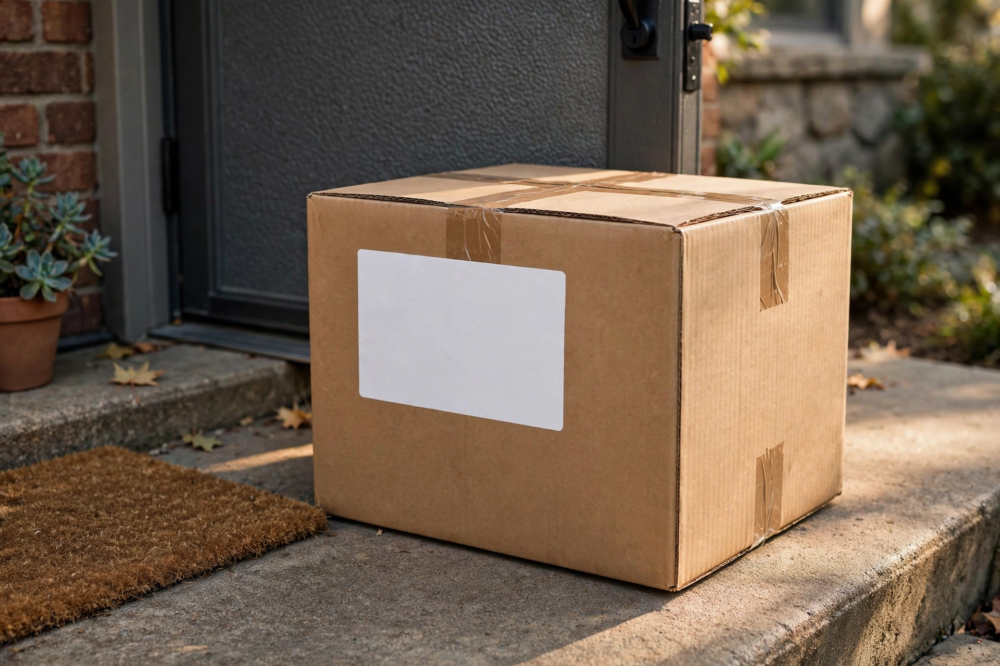

TC
EntretenimientoCocina de la Tía ChelaHace 2 h · Publicación de ejemplo
DemoHoy toca pozole rojo para el frío. ¿Ustedes con qué lo acompañan?
Me sirveAvisar a alguienGuardar

 El feed · concepto propio, no es Facebook
Prototipo no afiliado
El feed · concepto propio, no es Facebook
Prototipo no afiliadoPOTENCIADA POR MUSEHecha con la Meta Model API (Muse Spark)
Así se vería Nelli sobre cualquier publicación. Esto es un escaparate de Nelli, no una red de Meta.
Prueba sin llave: la parte de IA es una emulación local, no Muse. Con la llave de Meta en .env entra Muse de verdad.
Feed de demostración: personas, publicaciones y mensajes son inventados; las fotos son imágenes generadas con Muse Image para la demo. Los botones Verificar sí usan el motor real de Nelli.
Hoy toca pozole rojo para el frío. ¿Ustedes con qué lo acompañan?
Oferta no verificada: verifica 5 puntos antes de comprar
Me llegó esto por mensaje. ¿A alguien más? ¿Será cierto?
Mensaje que compartió · ejemplo inventado

Mensaje no verificado: verifica 5 puntos antes de contestar
Esto le llegó a mi papá por WhatsApp. Dice que hoy le bloquean la cuenta:
Mensaje que compartió · ejemplo inventado
Aviso de banco no verificado: verifica antes de abrir la liga
El sábado hay jornada de limpieza en el parque. Nos vemos a las 9, traigan escoba si pueden.
¿Esto es normal? No estoy esperando ningún paquete:
Mensaje que compartió · ejemplo inventado

Paquete no verificado: no pagues nada por la liga
Le llegó a una vecina haciéndose pasar por su hijo. Ella mejor llamó al número de siempre:
Conversación que compartió · ejemplo inventado

Número nuevo que pide dinero: verifica llamando al de siempre
Empleo no verificado: si no dice qué empresa es, desconfía
Sin prisa ni liga: aun así puedes verificarlo en 5 puntos
Le llegó a mi tía y casi paga el «envío» para reclamarlo:
Mensaje que compartió · ejemplo inventado
Premio no verificado: verifica 5 puntos antes de reclamar
Préstamo no verificado: no deposites nada por adelantado